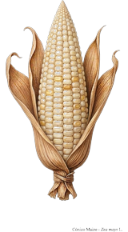
Cónico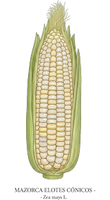
Elotes Cónicos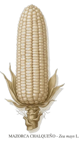
Chalqueño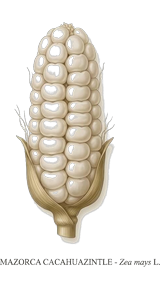
Cacahuacintle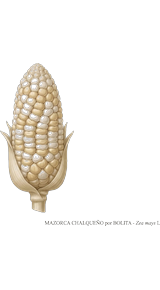
Chalqueño x Bolita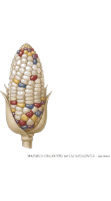
Chalqueño x Cacahuacintle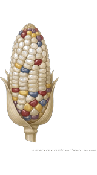
Chalqueño x Cónico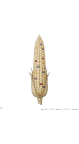
Cónico x Elotes Cónico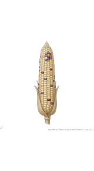
Cónico x Cacahuacintle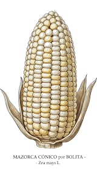
Cónico x Bolita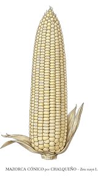
Cónico x Chalqueño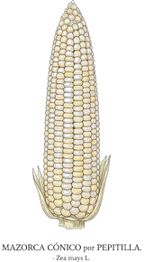
Cónico x Pepitilla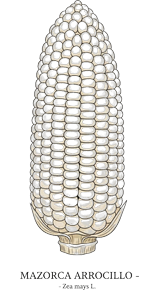
Arrocillo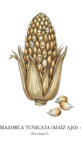
Tunicata